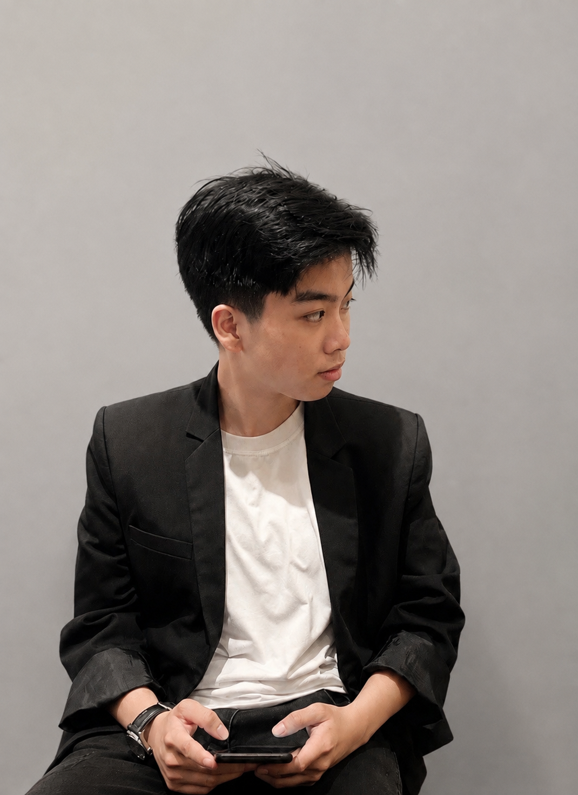

Tran Tuyet (b. 2003, Dak Lak) is a visual artist based in Ho Chi Minh City. She approaches painting as a space for observation and self-discovery. Inspired by ordinary moments and guided by intuition, her work explores emotion through an expressive and understated visual language. Each painting is a quiet conversation between memory, feeling, and the act of making.

2018 – 2021: College of Culture and Arts
2021 – 2026: Ho Chi Minh City University of Fine Arts
2019 – Present
Art Kid
Lux Studio
2019 – Present
Thành Công Camera
Travel House
2021 – Present
Web Design
Illustration
Event
Drawing Class
Drawing & Sketching
Photographe